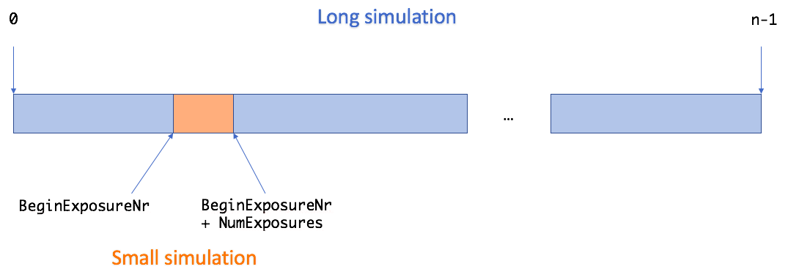
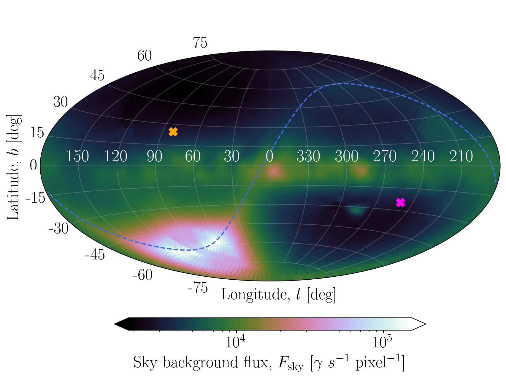
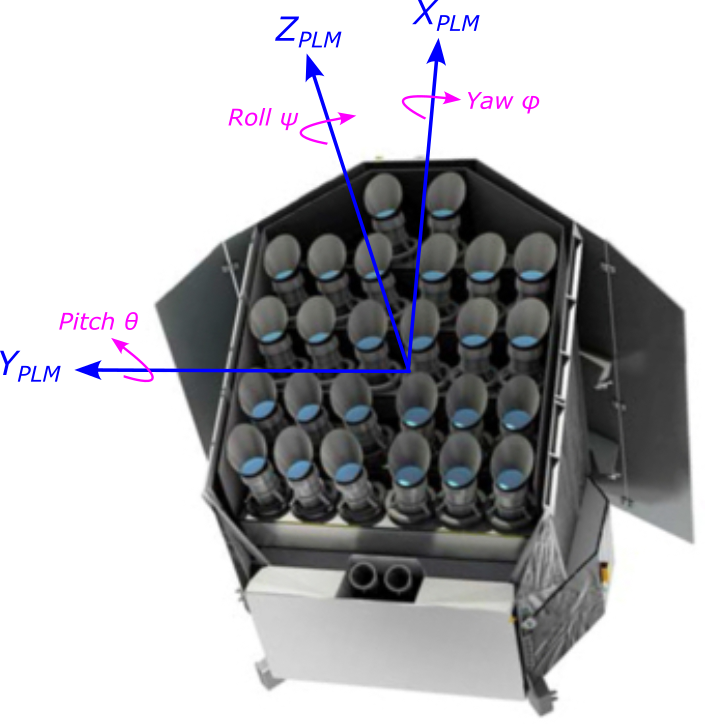
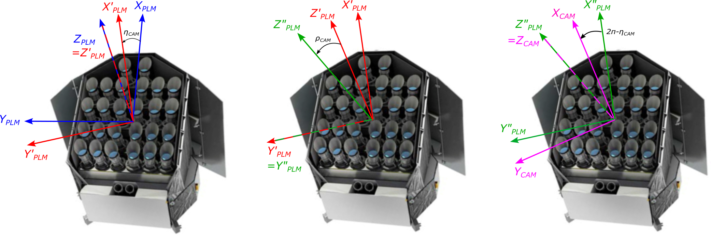
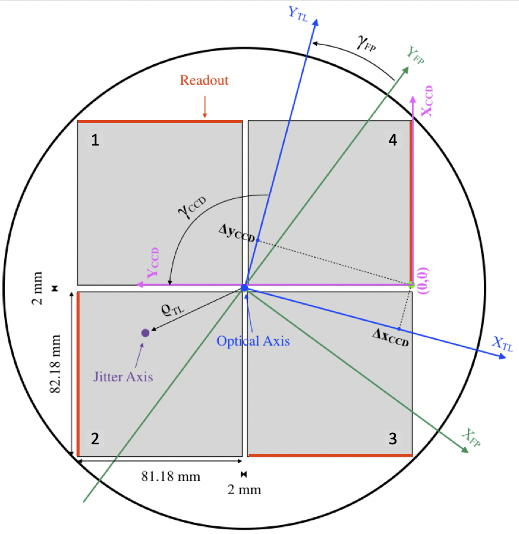
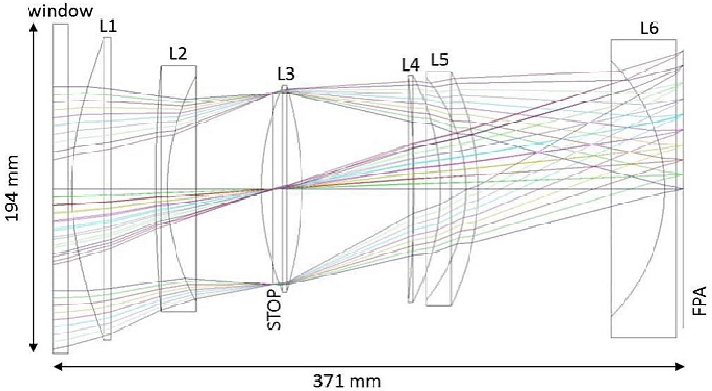
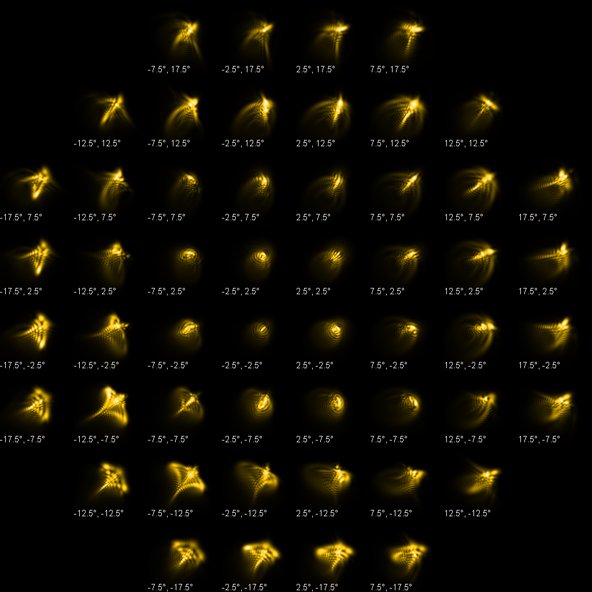
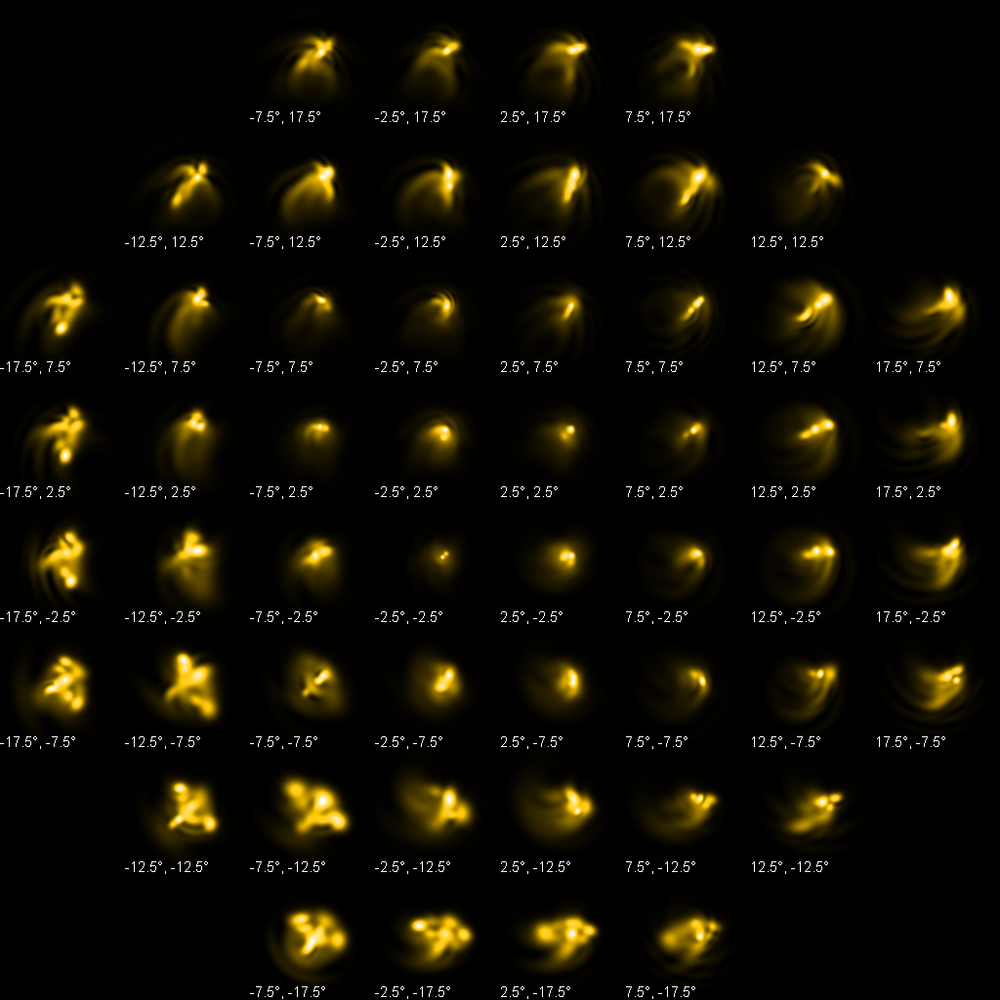
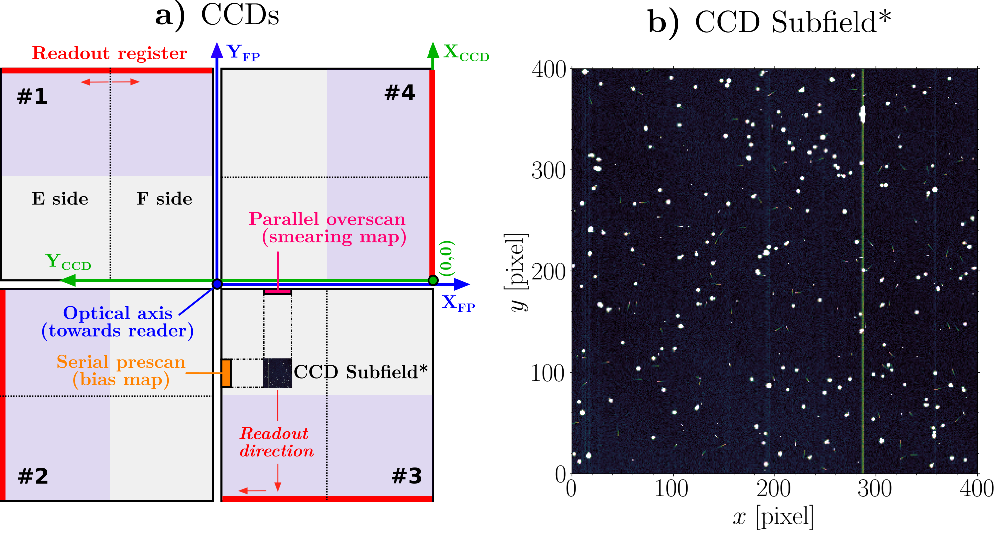
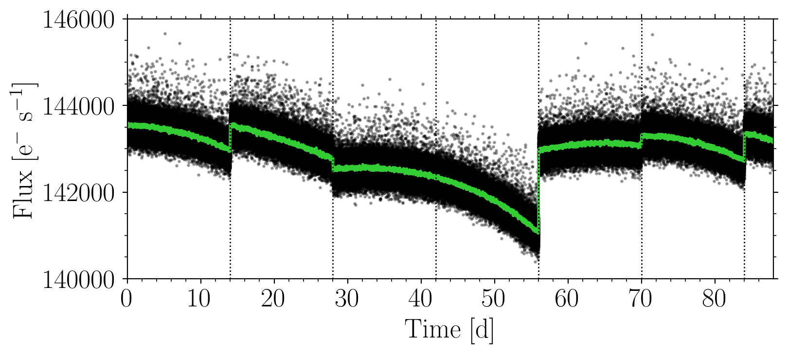

Input Files¶
Configuration Parameters¶
To configure the PlatoSim, a large set of configuration parameters is required. The input file format used for PlatoSim3 is YAML. All configuration parameters and files are read from the default YAML file called inputfile.yaml located in the inputfiles/ directory. The different blocks in the configuration files reflect their function in the simulation. We use only a very limited set of the YAML functionality, enough to allow us to provide input files for different parts of the simulator.
Overview of Configuration Parameters
Additionally, there are two blocks that hold predefined settings:
In the following sections we describe these parameters for the simulations in detail. For more details on the reference frames we are using (for the spacecraft, telescope, focal plane, and CCD), radial dependency of the PSF, and rotation angles for platform jitter and camera drift, please, consult the PlatoSim paper and the technical note PLATO-KUL-PL-TN-0001.
General¶
The general configuration parameters are listed in the General block of the configuration file. The structure of this block is the following:
General:
ProjectLocation: ENV['PLATO_PROJECT_HOME']
ProjectLocation: Allowed values Name of exported environment variable
Full path of the directory in which you have checked out the PlatoSim3 project, or an environment variable, e.g. PLATO_PROJECT_HOME, containing the full path to that directory. In the latter case, you must make sure you have exported this variable before using PlatoSim (see prerequisites).
Observing Parameters¶
The ObservingParameters block of the configuration file contains the configuration parameters that are specific to the simulated observation and are not specific for the hardware components of the satellite. The structure of this block is the following:
ObservingParameters:
MissionDuration: 6.5
NumExposures: 10
BeginExposureNr: 0
CycleTime: 25
Fluxm0: 1.00179e8
StarCatalogFile: inputfiles/starcatalog.txt
MissionDuration Allowed values \(> 0\) yr
Total duration of the mission, from Beginning Of Life (BOL) to End Of Life (EOL). This will be used to model the parameter degradation over time due to ageing.
NumExposures: Allowed values \(> 0\)
Number of exposures to generate in the simulation.
BeginExposureNr: Allowed values \(> 0\)
Sequential number of the first exposure. Useful for Slurm parallelisation. In that case, long simulations (i.e. with a large number of exposures) will be chopped up into smaller simulations, covering a small number of exposures (see the Fig. 1).
{kind=link}

Fig. 1: Long simulations can be chopped up into smaller simulations for parallelisation.¶
CycleTime: Allowed values \(> 0\) s
Image cycle time. This is the sum of the integration time of one exposure and the subsequent readout:
\(t_{\text{cycle}} = t_{\text{exp}} + t_{\text{readout}}\)
For the normal cameras, the latter is the total readout time; for the fast cameras, it is the time for the frame transfer (i.e. to transfer the content of the upper CCD half to the lower CCD half).
Fluxm0: Allowed values \(> 0 \ \gamma \, \text{s}^{-1} \, \text{cm}^{-2}\)
Flux of a star of zero magnitude (\(m_{\lambda} = 0\)) in the passband of the magnitudes that are listed in the star catalogue below.
For an exposure of \(t_{\rm exp}\) seconds, the measured flux \(F_{\gamma}\) of a star, expressed in photons \(\gamma\), is computed from its catalogue magnitude \(m_{\lambda}\), the effective light-collecting area \(A\) (in \(\text{cm}^2\)) of the telescope, the transmission efficiency \(T_{\lambda}\) of the optical system, the quantum efficiency \(Q\) of the detector, and the flux per second \(F_0\) of a star with zero magnitude (\(m_{\lambda} = 0\)) from the equation:
\(F_{\lambda} = t_{\rm exp} \ F_0\ T_{\lambda}\ Q \ A \ 10^{-0.4 \, m_{\lambda}}\)
where the \(\lambda\) refers to the wavelength range in which the simulation is performed.
StarCatalogFile: Allowed values Path to StarCatalogFile file
Path to the star catalogue file (absolute path or relative to the project location). This file should contain three columns, separated by a space, holding the following information:
Right ascension of the stars [deg]
Declination of the stars [deg]
Stellar magnitude (in passband corresponding to
Fluxm0)
A fourth column is optional and should contain positive integers, serving as star identifier. If absent, the line number will act as star identifier (counting starts at 1). Note that by default PlatoSim uses the Long Observational Phase (LOP) South field from the PLATO Input Cata (PIC1.1).
Sky¶
The Sky block of the configuration file contains all the information that is specific to the sky, i.e. sky background and cosmics. The structure of this block is the following:
Sky:
SkyBackground:
UseConstantSkyBackground: yes
BackgroundValue: -1
IncludeVariableSources: no
VariableSourceList: inputfiles/varsource.txt
IncludeCosmicsInSubField: yes
IncludeCosmicsInSmearingMap: yes
IncludeCosmicsInBiasMap: yes
Cosmics:
CosmicHitRate: 10
TrailLength: [0, 15]
Intensity: [2500., 2000., 30.]
SkyBackground:
SkyBackground/UseConstantSkyBackground: Allowed values
yesandnoIf
yesa constant sky background over the entire subfield will be computed. Ifnoa gradient sky background will be computed ifBackgroundValueis set to negative.SkyBackground/BackgroundValue: Allowed values \(\in \mathbb{Z} \, \gamma \, \text{s}^{-1} \, \text{pixel}^{-1}\)
In case a positive value is given (\(>0\)), the sky background, is simply set to the given value over the entire subfield.

Fig. 2: Aitoff projection of the sky background map in Galactic coordimates.¶
In case a negative value is given (\(<0\)), the sky background is automatically computed from tabulations of a zodiacal and galactic sky map. Fig. 2 shows the interpolated sky background map used where the blue dashed line is the ecliptica and the orange and magenta crosses are current LOP North and South pointings. Note that the sky background value has not been multiplied with the tranmission efficiency yet.
{kind=link}
IncludeVariableSources: Allowed values yes and no
Indicates whether or not stellar variability must be included.
VariableSourceList: Allowed values Path to VariableSourceList file
In case you want to include stellar variability for the sources in the star catalogue, you must provide an ascii file with two columns, separated by a space:
Star identifier (the same as in the star catalogue)
Path to the file (absolute path or relative to the project location) indicating how the magnitude of this particular source varies over time.
The latter files also consist of two columns separated by a space:
Time [sec]
Delta magnitude (with zero mean)
IncludeCosmicsInSubField: Allowed values yes and no
Indicates whether or not cosmics must be added to the pixel map.
IncludeCosmicsInBiasMap: Allowed values yes and no
Indicates whether or not cosmics must be added to the bias register map.
IncludeCosmicsInSmearingMap: Allowed values yes and no
Indicates whether or not cosmics must be added to the smearing map.
Cosmics:
The configuration parameters in the Cosmics section are the parameters characterising the cosmic hits. The excess electrons of the cosmic hits are distributed over a trail, characterised by a decay function of the form:
\(f(t) = \exp{\left(\frac{-t^2}{2 \, \sigma^2}\right)}\)
The following parameters are only applicable if cosmics are included in at least one of the above image maps.
Cosmics/CosmicHitRate: Allowed values \(\geq 0 \, \text{events} \, \text{cm}^{2} \, \text{s}^{-1}\)
Mean cosmic hit rate. The actual cosmic hit rate for any exposure is sampled randomly from a Poisson distribution with the mean cosmic hit rate as mean. The number of cosmic hits in the simulated subfield is calculated by multiplying the actual cosmic hit rate with the size of the subfield and the cycle time.
Cosmics/TrailLength: Allowed values \(> \{0, 0\} \ \text{cm}\)
Interval for the allowed length of the cosmic trails.
Cosmics/Intensity: Allowed values \(> \{0, 0, 0\} \ \text{e}^-\)
Interval for the allowed number of electrons comprised in a cosmic hit (that are to be spread over the trail).
Platform¶
The Platform block of the configuration file contains all the information that is specific to the platform of the satellite. The structure of this block is the following:
Platform:
Orientation:
Source: Angles
Angles:
RAPointing: 86.8
DecPointing: -46.4
SolarPanelOrientation: -8.5
Quaternion:
Components: [0.28799417562029345, -0.6861914144641562,
0.6254816331711222, 0.23446412111462545]
UseJitter: yes
JitterSource: FromRedNoise
JitterYawRms: 1.0
JitterPitchRms: 1.0
JitterRollRms: 1.0
JitterTimeScale: 3600.
JitterFileName: /inputfiles/jitter.txt
Orientation:
The orientation of the spacecraft can be configured either through the the sky (coordinate) angles (\(\alpha\), \(\delta\), \(\kappa\)) or using so-called a quaternion. A unit quaternion to transform from the equatorial to the platfrom reference frame.
Angles/RApointing: Allowed values \(\alpha \in [0, 360]\) deg
Right ascension of the platform pointing.
Angles/DecPointing: Allowed values \(\delta \in [-90, 90]\) deg
Declination of the platform pointing.
Angles/SolarPanelOrientation: Allowed values \(\kappa \in [0, 360]\) deg
Orientation angle of the solar panel. This is the roll angle of the platform, which enables orienting the solar panels towards the Sun each quarter, i.e. at the beginning of each quarter the roll angle must be increased by 90 degrees (being either 0, 90, 180, and 270). Note that to properly account for the re-orientation of the solar panels, simulations must be chopped up in chunks of maximum three months (one mission quarter).
Quaternion/Components: Allowed values \(\in [-1, 1]\) for all 4 component.
UseJitter: Allowed values yes and no
Indicates whether pointing variations should be taken into account.
PlatoSim can also account for pointing variations of the spacecraft, so-called jitter. A time series of pointing displacement, expressed in Euler angles (yaw, pitch, roll), either has to be provided as a jitter file or will be generated based on the given jitter parameters (see further). To ensure a realistic modelling of the jitter, the time step of the jitter time series must be smaller than the exposure time.
{kind=link}

Fig. 3: Platform configuration for AOCS Jitter.¶
The configuration of the jitter axes is depicted below. The Euler angles that characterise the jitter are defined w.r.t. to the spacecraft coordinate system (see Fig. 3). The origin of this coordinate system is the geometric centre of the interface between the bottom of the optical bench and the service module. The positive roll axis \(z_{\rm SC}\) points towards the operator-given mean payload line-of-sight, given by the equatorial coordinates (RApointing, DecPointing, solarPanelOrientation).
The angles are defined such that they increase with a clockwise rotation, when looking along the positive axes. First a roll rotation is done around the \(z_{\rm SC}\) axis, then a pitch rotation is done around the rotated \(y_{\rm SC}\) axis, and finally a yaw rotation is done around the twice-rotated \(x_{\rm SC}\) axis.
JitterSource: Allowed values FromRedNoise, FromFile, and FromNetwork
Indicates from where to read the jitter:
FromRedNoise: Jitter positions must be generator from the jitter parameters;FromFile: Jitter time series must be read from a jitter file;FromNetwork: Jitter positions must be read from a network (see ControlTcpConnection).
JitterYawRms: Allowed values \(\ge 0\) arcsec
Standard deviation of the normal distribution (with zero mean) describing the yaw value from one jitter position to the next one. This entry is only applicable if JitterSource = FromRedNoise.
JitterPitchRms: Allowed values \(\ge 0\) arcsec
Standard deviation of the normal distribution (with zero mean) describing the pitch value from one jitter position to the next one. This entry is only applicable if JitterSource = FromRedNoise.
JitterRollRms: Allowed values \(\ge 0\)
Standard deviation of the normal distribution (with zero mean) describing the roll value from one jitter position to the next one. This entry is only applicable if JitterSource = FromRedNoise.
JitterTimeScale: Allowed values \(> 0\) s
Timescale of the jitter (i.e. time between two subsequent jitter positions). This entry is only applicable if JitterSource = FromRedNoise.
JitterFileName: Allowed values Path to JitterFileName file
If JitterSource = FromFile, a jitter time series must be provided in a file ascii format. This file should contain four columns, separated by a space, holding the following information:
Time [s]
Yaw [arsec]
Pitch [arcsec]
Roll [arcsec]
The path to the jitter file can be an absolute path or relative to the project location.
Attention
To ensure a realistic modelling of the jitter, the time step in the jitter time series must be smaller than the exposure time.
Telescope¶
The Telescope block of the configuration file contains all the information that is specific to the telescope. The structure of this block is the following:
Telescope:
GroupID: Custom
AzimuthAngle: 0.0
TiltAngle: 0.0
LightCollectingArea: 113.1
TransmissionEfficiency:
BOL: 0.8135
EOL: 0.7945
UseDrift: no
DriftSource: FromRedNoise
DriftYawRms: 2.0
DriftPitchRms: 2.0
DriftRollRms: 2.0
DriftTimeScale: 3600.
DriftFileName: inputfiles/drift.txt
GroupID: Allowed values 1, 2, 3, 4, Fast, and Custom
The telescope group identifier can be used to select a camera group. As shown in Fig. 4, there are four groups that have a tilt angle of \(9.2^{\circ}\) - from the optical axis of the satellite, and one group for the fast camera’s which is aligned with the platform \(Z_{\rm PLM}\) axis (black dot of Fig. 4). When you specify GroupID = Custom, the tilt angle and azimuth angle below the GroupID in the inputfile are used, otherwise the angles are taken from predefined parameters in the CameraGroups block of the configuration file.

Fig. 4: FOV for the different camera groups.¶
TiltAngle: Allowed values \(\in\) [0, 90] deg
Tilt angle of the telescope. This angle, together with the azimuth angle, characterises the orientation of the telescope pointing (i.e. telescope optical axis) w.r.t. the platform pointing. This parameter is only used when the GroupID = Custom.
The tilt angle is the offset between the camera optical axis and the platform pointing, i.e. the angle between the camera line-of-sight (positive \(Z_{\rm CAM}\) axis and the positive \(Z_{\rm PLM}\) axis (see Fig. 4).
AzimuthAngle: Allowed values \(\in\) [0, 360] deg
Azimuth angle of the telescope, expressed in degrees. This angle, together with the tilt angle, characterises the orientation of the telescope pointing (i.e. telescope optical axis) w.r.t. the platform pointing. This parameter is only used when the GroupID = Custom.
The azimuth angle is the position angle of the rotation of the telescope around the positive \(z_{\rm PLM}\) axis (see Figs. 4 and 5).

Fig. 5: Tilt and azimuth of camera.¶
LightCollectingArea: Allowed values \(> 0 \ \text{cm}^2\)
Light-collecting area of one telescope.
TransmissionEfficiency:
The transmission efficiency of the optical system, considering the passband and the spectral energy distribution of the stars, given the Fluxm0 parameter and the magnitudes in the star catalogue degrades linearly over the mission lifetime. The following two parameters are used to model the (linear) degradation in transmission efficiency over the mission lifetime:
TransmissionEfficiency/BOL: Allowed values \(\in\) [0, 1]
Tranmission efficiency of the optical system, considering the passband and spectral energy distribution of the stars, given the
Fluxm0parameter and the magnitudes in the star catalogue, at the beginning of the mission (BOL).TransmissionEfficiency/EOL: Allowed values \(\in\) [0, 1]
Tranmission efficiency of the optical system, considering the passband and spectral energy distribution of the stars, given the
Fluxm0parameter and the magnitudes in the star catalogue, at the end of the mission (EOL).
UseDrift: Allowed values yes and no
Indicates whether the thermo-elastic drift of the camera (w.r.t. the platform) should be taken into account. Similar to the UseJitter parameter for the platform jitter.
PlatoSim can also account for the thermo-elastic drift, of the camera (w.r.t. the platform). A time series of displacements, expressed in Euler angles (yaw, pitch, roll), either has to be provided as a drift file or will be generated based on the given drift parameters shown below.
The Euler angles (yaw, pitch, roll) are defined as the rotation angles around the \(Z_{\rm PLM}\), \(Y'_{\rm PLM}\), and \(Z_{\rm CAM} = Z_{\rm FP}\) axes, such that the anges increase with a clockwise rotation when looking along the positive axes (see Fig. 6).
{kind=link}

Fig. 6: Reference transformation from platform to camera system.¶
The optical axis \(Z_{\rm FP}\) can be obtained from the platform pointing axis \(Z_{\rm PLM}\) by first rotating the (\(X_{\rm PLM}\), \(Y_{\rm PLM}\)) plane around the pointing axis \(Z_{\rm PLM}\) over the azimuth angle (left-hand side) and then rotating the resulting \(Z'_{\rm PLM}\) axis over the tilt angle (right-hand side).
DriftSource: Allowed values FromRedNoise and FromFile
Indicates from where to read the drift:
FromRedNoise: the drift positions must be generator from the drift parametersFromFile: the drift time series must be read from a drift file
DriftYawRms: Allowed values \(\ge 0\) arcsec
Standard deviation of the normal distribution (with zero mean) describing the yaw value from one drift position to the next one. This entry is only applicable if DriftSource = FromRedNoise.
DriftPitchRms: Allowed values \(\ge 0\) arcsec
Standard deviation of the normal distribution (with zero mean) describing the pitch value from one drift position to the next one. This entry is only applicable if DriftSource = FromRedNoise.
DriftRollRms: Allowed values \(\ge 0\) arcsec
Standard deviation of the normal distribution (with zero mean) describing the roll value from one drift position to the next one. This entry is only applicable if DriftSource = FromRedNoise.
DriftTimeScale: Allowed values \(> 0\) s
Timescale of the drift (i.e. time between two subsequent drift positions). This entry is only applicable if DriftSource = FromRedNoise.
DriftFileName: Allowed values Path to DriftFileName file
If DriftSource = FromFile, camera drift file must be provided in ascii format. This file should contain four columns, separated by a space, holding the following information:
Time [s]
Yaw [arsec]
Pitch [arcsec]
Roll [arcsec]
The path to the drift file can be an absolute path or relative to the project location.
Camera¶
The Camera block of the configuration file contains all the information that is specific to the camera. The structure of this block is the following:
Camera:
PlateScale: 0.8333
FocalPlaneOrientation:
Source: ConstantValue
ConstantValue: 0.0
FromFile: inputfiles/fporientation.txt
FocalLength:
Source: ConstantValue
ConstantValue: 0.24752
FromFile: inputfiles/focallength.txt
ThroughputBandwidth: 532
ThroughputLambdaC: 550
IncludeAberrationCorrection: yes
AberrationCorrection:
Type: differential
OrbitFile: inputfiles/orbit.txt
StartTime: 101489.207030
IncludeFieldDistortion: yes
FieldDistortion:
Source: ConstantValue
ConstantCoefficients: [ 0.32419, 0.0232909, 0.407979, 0.00022463,
0.000217599, 0.000381958, 0.000963902]
ConstantInverseCoefficients: [-0.323487, 0.268344, -0.435473, -0.00019304,
-0.000176961, -0.000321713, -0.000827654]
CoefficientsFromFile: inputfiles/distortioncoefficients.txt
InverseCoefficientsFromFile: inputfiles/distortioninversecoefficients.txt
IncludePointLikeGhosts: yes
IncludeExtendedGhosts: no
Ghosts:
PointLike:
FluxRatio: 0.08
DistanceCutOff: 8
Extended:
FluxRatio: 0.06
RadiusCoefficients: [0.0062, -0.0251, 1.8402]
DistanceRatio: 1.065
PlateScale: Allowed values \(> 0 \ \text{arcsec} \, \text{micron}^{-1}\)
Nominal plate scale. This value affects the visible FOV of the CCD.
FocalPlaneOrientation:
The orientation of the focal plane can either be kept constant over the simulations or vary, according to the values in a file provided by the user. For an angle of \(0^{\circ}\), the \(Y_{\rm CCD}\) axis of the CCD (with an orientation angle of \(0^{\circ}\)) points towards the North. A positive angle corresponds to a counter-clockwise rotation. Have a look at Fig. 7 for more details.
{kind=link}

Fig. 7: A schematic overview of the focal plane with 4 CCDs.¶
The optical axis \(Z_{\rm FP}\) is the blue dot in the middle of the 4 CCDs and points in the positive direction towards the reader. The jitter roll axis \(Z_{\rm CAM}\) is the purple dot, and also points in the positive direction towards the reader. The focal plane is rotated by the angle \(\gamma_{\rm FP}\) w.r.t. to the North direction. The origin of the CCD in the focal plane is defined by its offset \((\Delta X_{\rm CCD}, \Delta Y_{\rm CCD})\) in mm from the centre of the focal plane. It is then rotated by the angle \(\gamma_{\rm CCD}\) round its origin.
FocalPlaneOrientation/Source: Allowed values
ConstantValueandFromFileIndicates whether the value of the focal-plane orientation angle must be constant or is allowed to vary over time, according to the values read from a file.
FocalPlaneOrientation/ConstantValue: Allowed values \(\in\) [0, 360] deg
Orientation angle of the focal plane. This entry is only applicable if
FocalPlaneOrientation/Source = ConstantValue.FocalPlaneOrientation/FromFile: Allowed values Path to FocalPlaneOrientationFile file
If
FocalPlaneOrientation/Source = FromFile, a focal-plane orientation time series must be provided in an acsii file. This file should contain two columns, separated by a space, holding the following information:
Time [s]
Focal-plane orientation [deg]
The path to the focal-length file can be an absolute path or a path relative to the project location.
FocalLength:
The focal length can either be kept constant over the simulations or vary, according to the values in a file provided by the user.
FocalLength/Source: Allowed values
ConstantValueandFromFileIndicates whether the value of the focal length must be constant or is allowed to vary over time, according to the values read from a file.
FocalLength/ConstantValue: Allowed values \(> 0\) m
Focal length as recovered from the Zemax model. This entry is only applicable if
FocalLength/Source = ConstantValue.FocalLength/FromFile: Allowed values Path to FocalLengthFile file
If
FocalLength/Source = FromFile, a focal-length time series must be provided in a acsii file. This file should contain two columns, separated by a space, holding the following information:
Time [s]
Focal length [m]
The path to the focal-length file can be an absolute path or a path relative to the project location.
ThroughputBandwidth: Allowed values \(> 0\) nm
FWHM of the throughput passband
ThroughputLambdaC: Allowed values \(> 0\) nm
Central wavelength of the throughput passband.
IncludeAberrationCorrection: Allowed values yes and no
Indicates whether or not to apply the aberration correction to all star positions in the star catalogue.
AberrationCorrection:
The calculation of the aberration correction is based on a elliptic earth orbit around the sun and does likewise take the Lissajous orbit of the satellite around L2 into account. We do calculate the kinematic aberration both in an absolute sense and differentially. The latter will be the observant for PLATO data products due to a absolute correction by the fine guidance sensor. The following parameters are only applicable if IncludeAbberationCorrection = yes:
IncludeAberrationCorrection/Type: Allowed values
differentialandabsoluteIndicates whether to apply either differential or absolute aberration correction.
IncludeAberrationCorrection/OrbitFile: Allowed values Path to OrbitFile file
The orbit file needs to be provided in ascii format and consist of four columns, each seperated by a space:
Time [s]
Coordinates of the spacecraft \((x, y, z)\) []
Velocity of the spacecraft \((v_x, v_y, v_z)\) [m/s]
Speed of the spacecraft [m/s].
The path to the orbit file can be an absolute path or a path relative to the project location.
IncludeAberrationCorrection/StartTime: Allowed values \(> 0\)
The time at in the orbit file that coresponds with exposure number 0.
IncludeFieldDistortion: Allowed values yes and no
Indicates whether or not the field distortion must be taken into account.
FieldDistortion:
The field distortion is represented by Distortion model from Wang et al. (2007) with coefficients: \((k_1, \, k_2, \, k_3, \, q_1, \, q_2, \, p_1, \, p_2)\). Note that the default distortion coeffcients are only applicable for the Wang model of the N-CAMs used for when PSF/Model = AnalyticNonGaussian (see PSF block).
FieldDistortion/Source: Allowed values
ConstantValueandFromFileIndicates that the field distortion is calculated from a
ConstantVlaue(constant in time) orFromFile(time dependent). The latter needs to be a time series of the field distortion coefficients and their inverse in two files in ascii format.FieldDistortion/ConstantCoefficients: Allowed values Any number
Coefficients for the Wang model that converts the normalised undistorted pixel coordinates (i.e. pixel coordinates divided by the focal length in pixels) to the distortion, expressed in normalised pixel coordinates. This entry is only applicable if
FieldDistortion/Source = ConstantValue.FieldDistortion/ConstantInverseCoefficients: Allowed values Any number
Inverse coefficients for the Wang model that converts the normalised distorted pixel coordinates (i.e. pixel coordinates divided by the focal length in pixels) to the (negative) distortion, expressed in normalised pixel coordinates. This entry is only applicable if
FieldDistortion/Source = ConstantValue.FieldDistortion/CoefficientsFromFile: Allowed values Path to ascii file
If
FieldDistortion/Source = FromFile, a time series of the change in field distortion must be provided in a acsii file. This file should contain two columns, separated by a space, holding the following information:
Time [s]
Field distortion coefficients (all separated by spaces)
Path to the file can either be an absolute path or relative to the project location).
FieldDistortion/InverseCoefficientsFromFile: Allowed values String with filename
If
FieldDistortion/Source = FromFile, a time series of the change in field distortion must be provided in a acsii file. This file should contain two columns, separated by a space, holding the following information:
Time [s]
Field distortion inverse coefficients (all separated by spaces)
Path to the file can either be an absolute path or relative to the project location).
Ghosts:
Sources in the FOV can produces two types of ghosts:
a point-like ghost;
an extended ghost.
The Telescope Optical Unit (TOU) representative of each cameras is shown in Fig. 8.
{kind=link}

Fig. 8: A schematic overview the Telescope Optical Unit (TOU). Credit: ESA.¶
Note that the flux loss of the sources (due to reflection off the CCD surface) is included in the quantum efficiency.
Ghosts/PointLike:
A star at focal-plane coordinates \((x, y)\) will produce a point-like ghost at focal-plane coordinates \((-x, -y)\) (i.e. at the opposite side of the optical axis on another CCD), as long as it is within the distance cut-off from the optical axis. This point-like ghost is caused by reflections on the CCD surface and both window surfaces (see Fig. 8).
Ghosts/PointLike/FluxRatio: Allowed values \(> [0, 1]\)
Irradiance ratio of the point-like ghost w.r.t. the source producing it, measured on-axis. The flux ratio off-axis decreases linearly from the optical axis to the distance cut-off (where it drops to zero), due to vignetting by the pupil around L3. This entry is only applicable if
IncludePointLikeGhost = yes.Ghosts/PointLike/DistanceCutOff: Allowed values \(> 0\) deg
Distance from the optical axis beyond which sources no longer produce point-like ghosts. At this distance, the flux ratio has dropped to zero. This entry is only applicable if
IncludePointLikeGhost = yes.Ghosts/Extended:
A star at focal-plane coordinates \((x, y)\) will produce an extended ghost further away from the optical axis. This ghost image is caused by reflections on the CCD surface and the back surface of L6.
Ghosts/Extended/FluxRatio: Allowed values \(> [0, 1]\)
Irradiance ratio of the extended ghost w.r.t. the source producing it. This entry is only applicable if
IncludeExtendedLikeGhost = yes.Ghosts/Extended/RadiusCoefficients: Allowed values \(> \{0, 0, 0\}\)
Coefficients of the 2nd order polynomial (in distance from the optical axis), describing the radius of the (circular) extended source. This entry is only applicable if
IncludeExtendedLikeGhost = yes.Ghosts/Extended/DistanceRatio: Allowed values \(> 0\) deg
A star at focal-plane coordinates \((x, y)\) will produce a ghost at focal-plane coordinates (
distanceRatio\(\cdot x\),distanceRatio\(\cdot y\)). This entry is only applicable ifIncludeExtendedLikeGhost = yes.
PSF¶
The PSF block of the configuration file contains all the information that is specific to the PSF. The structure of this block is the following:
PSF:
Model: AnalyticNonGaussian
MappedFromFile:
Filename: inputfiles/PSF_Focus_0mu.hdf5
NumberOfPixels: 8
ChargeDiffusionStrength: 0.2
IncludeChargeDiffusion: no
IncludeJitterSmoothing: no
AnalyticGaussian:
Sigma00: 1.0
SigmaX18: 5.0
SigmaY18: 2.0
AnalyticNonGaussian:
ParameterFileName: inputfiles/apsf_N6000K_v2.txt
ChargeDiffusionStrength: 0.2
IncludeChargeDiffusion: yes
Sigma:
Source: ConstantValue
ConstantValue: 0.5
FromFile: inputfiles/sigmaPSF.txt
Model: Allowed values MappedFromFile, AnalyticNonGaussian, and AnalyticGaussian
Indicates whether to use a Gaussian PSF, to read the PSF from an HDF5 file, or to use an analytical model (Gaussian or non-Gaussian):
MappedFromFile: the PSF is selected from an HDF5 file with pre-computed PSFs, based on the angular distance to the optical axis and the angle with respect to the \(x\) axis of the focal plane.AnalyticGaussian: the PSF is an elongated Gaussian (the symmetry axes being parallel to the x- and y-axis), for which the width and the height are given at the centre of the FOV and at 18 degrees from the optical axis;AnalyticNonGaussian: the PSF is an analytical non-Gaussian model, the parameters of which are stored in a separate file.
MappedFromFile:
The PSF is selected from an HDF5 file with pre-computed PSFs, based on the angular distance to the optical axis and the angle with respect to the x-axis of the focal plane. Fig. 9 shows the Mapped Zemax model PSFs across the FPA.
{kind=link}

Fig. 9: Zemax PSFs across the focal plane.¶
The following parameters are only applicable if Model = MappedFromFile:
MappedFromFile/Filename: Allowed values Path to MappedZemaxPSFs HDF5 file
Path to the file, relative to the project location, holding the location independent precomputed Zemax PSFs. The most recent version of the precomputed PSFs can be downloaded from our FTP server.
MappedFromFile/NumberOfPixels: Allowed values \(> 0\) pixel
Number of pixels (in both directions) for which the PSF was generated.
MappedFromFile/ChargeDiffusionStrength: Allowed values \(> 0\) pixel
Charge diffusion has been modelled by a convolution with a Gaussian diffusion kernel, of which this is the standard deviation.
MappedFromFile/IncludeChargeDiffusion: Allowed values
yesandnoIndicates whether or not to include charge diffusion.
MappedFromFile/IncludeJitterSmoothing: Allowed values
yesandnoIndicates whether or not to include jitter smoothing. This is implemented as charge diffusion with a kernel width of 0.5 subpixels and alleviates the problem of jitter discontinuities. Only applicable in case
MappedFromFile/IncludeChargeDiffusion = False.
AnalyticNonGaussian:
The PSF is an analytical non-Gaussian model, the parameters of which are stored in a separate file. Fig. 10 shows the Analytic non-Gaussian model PSFs across the FPA.
{kind=link}

Fig. 10: Analytic non-Gaussian PSFs across the focal plane.¶
The following parameters are only applicable if Model = AnalyticNonGaussian:
AnalyticNonGaussian/ParameterFileName: Path to ascii file
Path to the file (absolute path or relative to the project location) holding the parameters characterising the analytical model. The most recent values for these parameters can be found in the file
inputfiles/apsf_N6000K_v2.txt. These model parameters have been derived from a best fit solution to the corresponding Zemax PSFs given by the fileinputfiles/PSF_Focus_0mu.hdf5.AnalyticNonGaussian/Sigma:
The width of the analytic non-Gaussian PSF, equal to sigma for a Gaussian PSF, can either be kept constant over the simulations or vary, according to the values in a file provided by the user.
AnalyticNonGaussian/Sigma/Source: Allowed values
ConstantValueandFromFileIndicates whether the value of the width of the analytic non-Gaussian PSF must be constant or is allowed to vary over time, according to the values in a user-provided file.
AnalyticNonGaussian/Sigma/ConstantValue: Allowed values \(> 0\) pixel
Width of the analytic non-Gaussian PSF, equal to sigma for a Gaussian PSF, in case it must remain the same over the duration of the whole simulation. This entry is only applicable if
Sigma/Source = ConstantValue.AnalyticNonGaussian/Sigma/FromFile: Allowed values Path to SigmaWidth file
If
AnalyticNonGaussian/Sigma/Source = FromFile, a time series for the width of the analytic non-Gaussian PSF must be provided in a ascii file. This file should contain columns, separated by a space, holding the following information:
Time [s]
Width of the PSF [pixels]
Path to the file can either be an absolute path or relative to the project location).
AnalyticGaussian:
Attention
Note that this very crude model was used for beta-testing and is thus not recommend!
The PSF is an elongated Gaussian (the symmetry axes being parallel to the \(x\) and \(y\) axis), for which the width and the height are given at the centre of the FOV and at \(18^{\circ}\) from the optical axis. The following parameters are only applicable if Model = AnalyticGaussian:
AnalyticGaussian/Sigma00: Allowed values \(> 0\) pixel
Standard deviation of the analytical Gaussian PSF in the \(x\) and \(y\) direction at the optical axis.
AnalyticGaussian/SigmaX18: Allowed values \(> 0\) pixel
Standard deviation of the analytical PSF in the \(x\) direction at 18 degrees from the optical axis.
AnalyticGaussian/SigmaY18: Allowed values \(> 0\) pixel
Standard deviation of the analytical PSF in the \(y\) direction at 18 degrees from the optical axis.
FEE¶
The FEE block of the configuration file contains all the information that is specific to the Front-End Electronics (FEE). The structure of this block is the following:
FEE:
NominalOperatingTemperature: 210.15
Temperature: Nominal
TemperatureFileName: inputfiles/feeTemperature.txt
ReadoutNoise: 32.0
Gain:
RefValueLeft: 0.0222
RefValueRight: 0.0222
Stability: -300.0e-6
AllowedDifference: 0.0
ElectronicOffset:
RefValue: 1000
Stability: 1
OverAndUnderShoot:
Strength: 0.003867
DecaySpeed: 0.755
DecayRate: 1.277
Range: 5
IncludeOverAndUnderShoot: no
NominalOperatingTemperature: Allowed values \(> 0\) K
Nominal operating temperature of the FEE.
Temperature: Allowed values Nominal and FromFile
Indicates whether the temperature of the FEE should be fixed at the nominal operating temperature or temperature variations should be read from a file.
TemperatureFileName Allowed values Path to TemperatureFileNameFEE file
If FEE/Temperature = FromFile, a temperature time series for the FEE must be provided in a ascii file. This file should contain two columns, separated by a space, holding the following information:
Time [s]
Operating temperature of the FEE [K]
Path to the file with the FEE temperature variations can be an absolute path or relative to the project location).
ReadoutNoise: Allowed values \(\ge 0 \ \text{e}^- \, \text{pixel}^{-1}\)
Mean readout noise of the FEE. This is the same for both ADCs.
Gain:
The actual gain for the FEE will be different for both ADCs. A reference value is given for ADC1 and ADC2, and the difference should not exceed the specified allowed difference.
Gain/RefValueLeft: Allowed values \(> 0 \ \text{ADU} \, \mu\text{V}^{-1}\)
Reference value of the gain of ACD1 of the FEE at its nominal operating temperature.
Gain/RefValueRight: Allowed values \(> 0 \ \text{ADU} \, \mu\text{V}^{-1}\)
Reference value of the gain of ACD2 of the FEE at its nominal operating temperature.
Gain/Stability: Allowed values \(\ge 0 \ \text{ADU} \, \mu\text{V}^{-1} \, \text{K}^{-1}\)
Change in gain (for both ADCs) with temperature deviations from the nominal operating temperature
Gain/AllowedDifference: Allowed values \(\in\) [0, 100] \(\%\)
Percentage of the reference values for the gain of ADC1 and ADC2 that indicates the maximum allowed difference between these gain values.
ElectronicOffset:
The electronic offset or bias level is added to the digital signal in order to avoid negative readout values. The electronic offset can be measured in a prescan strip, which essentially consists of a few additional rows of the CCD. These rows only contain the electronic offset and the readout noise. This prescan strip consisting of NumPreScanRows rows will be stored in the output file. This is the same for both ADCs.
ElectronicOffset/RefValue: Allowed values \(\ge 0 \, \text{ADU} \, \text{pixel}^{-1}\)
Electronic offset or bias level at the nominal operating temperature of the FEE.
ElectronicOffset/Stability: Allowed values \(\ge 0 \, \text{ADU} \, \mu\text{V}^{-1} \, \text{K}^{-1}\)
Change in electronic offset (for both ADCs) with temperature deviations from the nominal operating temperature.
IncludeOverAndUnderShoot: Allowed values yes and no
Indicates whether or not to include F-FEE over-/undershoot.
Attention
Currently only availble for fast cameras (GroupID = Fast).
OverAndUnderShoot:
Over-/undershoot has been noticed in F-FEE measurements. Looking at the content of a readout register at any given time, the charges in any pixels will affect the next pixels in the readout register, further away from the readout register, e.g. at a distance \(\Delta x\). For a difference in signal between two such pixels, \(\Delta S\), the induced over-/undershoot will be
\(a \cdot \Delta S \cdot \exp{(- \lambda \cdot \Delta x^b)}.\)
Both detector halves are treated independently.
OverAndUnderShoot/Strength: Allowed values \(> 0\)
Parameter \(a\) in the formula above.
OverAndUnderShoot/DecayRate: Allowed values \(> 0\)
Parameter \(\lambda\) in the formula above.
OverAndUnderShoot/DecaySpeed: Allowed values \(> 0\)
Parameter \(b\) in the formula above.
OverAndUnderShoot/Range: Allowed values \(> 0\) pixel
Maximum distance \(\Delta x\) over which a pixel in the readout register exerts over-/undershoot on other pixels in the readout register, further away from the readout electronics.
CCD¶
Subfield¶
The SubField block of the configuration file contains all the information about the subfield of the CCD that is modelled by the simulation. The structure of this block is the following:
SubField:
ZeroPointRow: 0
ZeroPointColumn: 0
NumColumns: 100
NumRows: 100
NumBiasPrescanRows: 25
NumBiasPrescanColumns: 15
NumSmearingOverscanRows: 30
SubPixels: 8
Figure 11 shows a schematic representation of the subfield and the parameters required to define it. The CCD focal plane array shows also the metallic shields of the F-CAM (purple colored areas).
{kind=link}

Fig. 11: Left: CCD focal plane with location subfield. Right: Simulated CCD subfield.¶
ZeroPointRow: Allowed values \(> 0\) pixel
Row of the origin of the subfield in the detector.
ZeroPointColumn: Allowed values \(> 0\) pixel
Column of the origin of the subfield in the detector.
NumColumns: Allowed values \(\ge 6\) pixel
Number of columns in the subfield.
NumColumns: Allowed values \(\ge 6\) pixel
Number of rows in the subfield.
NumBiasPrescanRows: Allowed values \(\ge 0\) pixel
Number of rows in the prescan strip (see Fig. 11). There are two such strips, on either side of the detector image (serial prescan and overscan), and they contain the electronic offset and readout noise of the adjacent detector half.
This parameter is configurable (and not fixed to the number of rows in the detector or the subfield), because we want: 1) to avoid the bias maps to take up too much space in the output file, and 2) be able to do accurate bias correction for the photometric reduction (thus want to avoid small noisy bias maps).
NumBiasPrescanColumns: Allowed values \(\ge 0\) pixel
Number of columns in the prescan strip (see Fig. 11). There are two such strips, on either side of the detector image (serial prescan and overscan), and they contain the electronic offset and readout noise of the adjacent detector half.
NumSmearingOverscanRows: Allowed values \(\ge 0\) pixel
Number of rows in the parallel overscan strip (see Fig. 11). This strip is located at the top of the sub-field that is modelled in detail and contains the star smearing due to the absence of a shutter. The flux in this strip is also affected by the electronic offset, readout noise, and shot noise. Not included are the PRNU, cosmic hits, and charge-transfer inefficiency (CTI).
SubPixels: Allowed values power of 2 (\(\le 128\)) subpixel
Number of subpixels per pixel in both directions. If you want a pixel of \(16 \times 16 = 256\) subpixels, you should specify in the configuration file 16. By default this parameter is only 8 subpixels to keep the computational resources low.
Photometry¶
The Photometry block of the configuration file contains all information to run photometry. The structure of this block is the following:
Photometry:
IncludePhotometry: no
ContaminationRadius: 4
MaskUpdateInterval: 14.0
TargetFileName: inputfiles/photometry.txt
PlatoSim utilieses the optimal aperture photometry algortihm from Marchiori et al. (2019). This method is optimised to lower the photometric noise relevant for planet transit search. This algorithm allows for updating the aperture mask with a user defined interval. Fig. 12 shows an example of an extracted light curve for a \(V=11\) star using a mask-update of 14 days (enhanced by the 1 hour running median filter shown in green).
{kind=link}

Fig. 12: Optimal aperture photometry with mask-updates every 14 days.¶
IncludePhotometry: Allowed values yes and no
Indicates whether or not photometry should be run.
ContaminationRadius: Allowed values \(> 0\) pixel
Radius around a target within which sources are considered contaminants when calculating the photometry for that target.
MaskUpdateInterval: Allowed values \(> 0\) days
Update interval to update the photometry mask.
TargetFileName: Allowed values Path to PhotometryList file
Path of the file comprising the list of targets identifiers (as listed in the star catalogue in a single column). The path to the photometry list can be an absolute path or relative to the project location.
Random seeds¶
The RandomSeeds block of the configuration file contains all the seeds for random-number generation in the simulator. The structure of this block is the following:
RandomSeeds:
ReadOutNoiseSeed: 1424949740
PhotonNoiseSeed: 1433320336
JitterSeed: 1433320381
FlatFieldSeed: 1425284070
DriftSeed: 1433429158
CosmicSeed: 1494750830
DarkSignalSeed: 1468838669
Below each random seed can be set to a value of -1, which imply that the computer time at the start of the simulation will be used. That way, the fast-forward of the random generator when using Slurm is no longer needed (which is better for performance reasons). Note that the actual value that is used, will be written to the output HDF5 file.
ReadOutNoiseSeed: Allowed values \(> 0 \, \text{and} \, -1\)
Seed for the random-number generator used for the readout noise.
PhotonNoiseSeed: Allowed values \(> 0 \, \text{and} \, -1\)
Seed for the random-number generator used for the photon noise.
JitterSeed: Allowed values \(> 0 \, \text{and} \, -1\)
Seed for the random-number generator used for the jitter.
FlatFieldSeed: Allowed values \(> 0 \, \text{and} \, -1\)
Seed for the random-number generator used for the flatfield.
DriftSeed: Allowed values \(> 0 \, \text{and} \, -1\)
Seed for the random number generator used for the drift.
CosmicSeed: Allowed values \(> 0 \, \text{and} \, -1\)
Seed for the random-number generators for the cosmics.
DarkSignalSeed: Allowed values \(> 0 \, \text{and} \, -1\)
Seed for the random-number generators for the dark signal.
Attention
To avoid jumps in the power spectrum when using auto-generated jitter and/or drift values, it is advised to generate the these values for the whole simulation beforehand, write these values to a file, and reading in that file when simulating the different chunks.
Control HDF5 content¶
The ControlHDF5Content block of the configuration file contains all the seeds for random-number generation in the simulator. The structure of this block is the following:
ControlHDF5Content:
GroupByExposure: yes
WritePixelMaps: yes
WriteBiasMaps: yes
WriteSmearingMaps: yes
WriteFlatfieldMap: yes
WriteThroughputMaps: yes
WriteTransmissionEfficiency: yes
WriteBackgroundMap: yes
WriteCTI: yes
WriteSubPixelImages: no
WriteDiffusedPSF: no
WriteHighResolutionPSF: no
WriteACS: yes
WriteTelescopeACS: yes
WriteStarCatalog: yes
WriteStarPositions: yes
WriteGhostPositions: yes
WriteCosmics: yes
WritePixelImages: Allowed values yes and no
Indicates whether or not the pixel maps must be stored in the output file.
WriteBiasMaps: Allowed values yes and no
Indicates whether or not the bias register maps must be stored in the output file.
WriteSmearingMaps: Allowed values yes and no
Indicates whether or not the smearing maps must be stored in the output file.
WriteFlatfieldMap: Allowed values yes and no
Indicates whether or not the flatfield maps must be stored in the output file.
WriteThroughputMaps: Allowed values yes and no
Indicates whether or not the throughput maps must be stored in the output file.
WriteTransmissionEfficiency: Allowed values yes and no
Indicates whether the Transmission Efficiency should be stored in the output file.
WriteBackgroundMaps: Allowed values yes and no
Indicates whether the Sky Background maps hould be stored in the output file. If a constant background values is used this will be a single float value and not an image map.
WriteCTI: Allowed values yes and no
Indicates whether the CTI maps hould be stored in the output file. This is the trap density maps at BOL and EOL for each species.
WriteSubPixelImages: Allowed values yes and no
Indicates whether or not the sub-pixel maps must be stored in the output file. Only do this for a small number of exposures, as this takes up a lot of space. Note that this only takes into account the effects that are applied until right before the re-binning (see PlatoSim’s control flow).
WriteHighResolutionPSF: Allowed values yes and no
Indicates whether or not a high resolution image of the PSF should be stored in the output file. This feature does not work for Analytic Gaussian PSF.
WriteDiffusedPSF: Allowed values yes and no
Indicates whether or not a high resolution image of the PSF with diffusion applied to it should be stored in the output file. This features only works for the mapped PSF and takes a long time to compute.
WriteACS: Allowed values yes and no
Indicates whether or not the camera Yaw, Pitch and Roll should be stored in the output file. This scales with the number of exposures.
WriteTelescopeACS: Allowed values yes and no
Indicates whether or not the platform Yaw, Pitch and Roll should be stored in the output file. This scales with the number of exposures.
WriteStarCatalog: Allowed values yes and no
Indicates whether or not the starcatalog should be stored in the output file.
WriteStarPositions: Allowed values yes and no
Indicates whether or not the star positions should be stored in pixel and focal plane coordinates in the output file. This scales with the number of exposures and the number of stars in the sub-field.
WriteGhostPositions: Allowed values yes and no
Indicates whether or not the ghost positions should be stored in pixel and focal plane coordinates in the output file. This scales with the number of exposures and the number of stars in the sub-field.
WriteCosmics: Allowed values yes and no
Indicates whether or not the columns, rows and flux of the cosmics should stored in the output file. This scales with the number of exposures.
Control TCP connection¶
The ControlTcpConnection block in the configuration file is read from a network. The structure of this block is the following:
ControlTcpConnection:
SendImagettesToClients: no
GetWindowPositionsFromServer: no
WindowPositionServerAddress: tcp://localhost:5558
JitterServerAddress: tcp://localhost:5559
ImagetteClientAddress: tcp://localhost:5560
WindowPositionSocketTimeout: 100
JitterSocketTimeout: 100
SendImagettesToClients: Allowed values yes and no
Indicates whether or not the simulated imagettes should be sent to the client.
GetWindowPositionsFromServer: Allowed values yes and no
Indicates whether or not the window positions should be taken from a server and be updated in upcoming simulations.
WindowPositionServerAddress: Allowed values String with TPC address
Address from which to read the window positions in case this is requested (GetWindowPositionsFromServer = yes).
JitterServerAddress: Allowed values String with TPC address
Address from which to read the jitter positions.
ImagetteClientAddress: Allowed values String with TPC address
Client address to which to send the simulated imagettes in case this is requested (SendImagettesToClients = yes).
WindowPositionSocketTimeout: Allowed values \(> 0\)
Number of seconds of not receiving window positions (from the window position server), after which the connection to that server is regarded as stalled / broken.
JitterSocketTimeout: Allowed values \(> 0\)
Number of seconds of not receiving jitter positions (from the jitter server), after which the connection to that server is regarded as stalled / broken.
Camera Groups¶
Attention
You are not supposed to alter this section of the configuration file!
The CameraGroups block in the configuration file is used in case a predefined camera groups (1, 2, 3, 4, or Fast) was selected via the Telescope/GroupID parameter. The structure of this block is the following:
CameraGroups:
AzimuthAngle: [45.0, 135.0, 225.0, 315.0, 0.0]
TiltAngle: [9.2, 9.2, 9.2, 9.2, 0.0]
For more information, consult our technical note: PLATO-KUL-PL-TN-0001.
CCD Positions¶
Attention
You are not supposed to alter this section of the configuration file!
The CCDPositions block in the configuration file is used in case a predefined CCD position (1, 2, 3, or 4) was selected via the CCD/Position parameter. The structure of this block is the following:
CCDPositions:
UsePositionsFromFile: no
PositionsFileName: "inputfiles/cl2bCcds.txt"
OriginOffsetX: [-1.3, -1.3, -1.3, -1.3]
OriginOffsetY: [82.48, 82.48, 82.48, 82.48]
Orientation: [180, 270, 0, 90]
NumColumns: [4510, 4510, 4510, 4510]
NumRows: [4510, 4510, 4510, 4510]
FirstRowForNormalCamera: [0, 0, 0, 0]
FirstRowForFastCamera: [2255, 2255, 2255, 2255]
MetallicShield:
IncludeMetallicShield: yes
ShieldColumnCoordinates: [10, 4500]
ShieldRowCoordinates: [2260, 4505]
TimeShift: [0.0, 6.25, 12.5, 18.75]
For more information, consult our technical note: PLATO-KUL-PL-TN-0001.
Supplementary Files¶
Depending on you configuration, some additional files may be required. We here provide a table to quickly query the one(s) that may be of your interest:
Overview of Supplementary Files
StarCatalogFile: a star catalog file of the region of the sky of interest
VariableSourceList: a star variable list of the sources in the star catalog
JitterFileName: a time series for the jitter angles
DriftFileName: a time series for the drift angles
FocalPlaneOrientationFile: a time series for the focal-plane orientation
FocalLengthFile: a time series for the focal length
OrbitFile: a time series of the spacecraft position and velocity
FieldDistortion: two time series for the field distortion coefficients and their inverse
MappedZemaxPSFs: a file with precomputed Zemax PSFs
AnalyticNonGaussian: a file with parameters of the analytic non-Gaussian PSF
SigmaWidth: a time series for the width of the analytic non-Gaussian PSF
TemperatureFileNameFEE: a time series for the operating temperature of the FEE
`TemperatureFileNameCCD`_: a time series for the operating temperature of the CCD
PhotometryList: a photometry list of the sources from the star catalog
A few notes about the provided time series:
Always secure that the duration of your time series is greater than the planned simulation.
PlatoSim will automatically interpolate the provided time series if time step is larger that the cadence.
PSF Data Packages¶
If you want to use realistic PSF models instead of a Gaussian, you can download these from out FTP server. The default file for most users (in focus PSF at a 6000K stellar effective temperature) can be found here.
Default PSF (at 6000K):
Out off focus PSF (at 6000K):
PSF at different stellar effective temperatures: